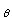

Then summing the coordinates of u and v and using |a + b|
 |a| + |b| in R gives the triangle inequality in d1.
|a| + |b| in R gives the triangle inequality in d1.
In R2 you can simplify things by taking u = x - y and v = y - z with u + v = x - z.
Then summing the coordinates of u and v and using |a + b| |a| + |b| in R gives the triangle inequality in d1.
For d2 : |u + v|2 = |u|2 + |v|2 + 2 u.v and since u.v = cos()|u||v| and cos() 1 this is |u + v|2 and the result follows.
For d : the maximum of the first coordinates of u+ v maximum of |coordinates of u| + maximum of |coordinates of v| and similarly for the second coordinates.
: the maximum of the first coordinates of u+ v maximum of |coordinates of u| + maximum of |coordinates of v| and similarly for the second coordinates.